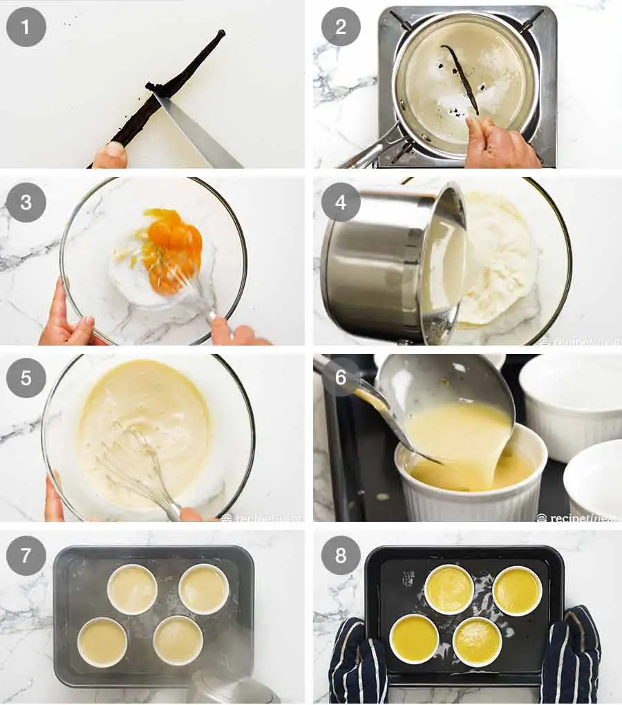
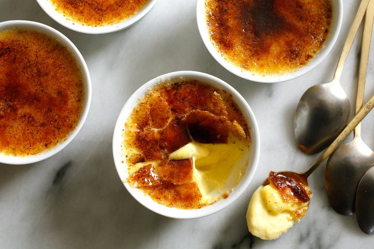
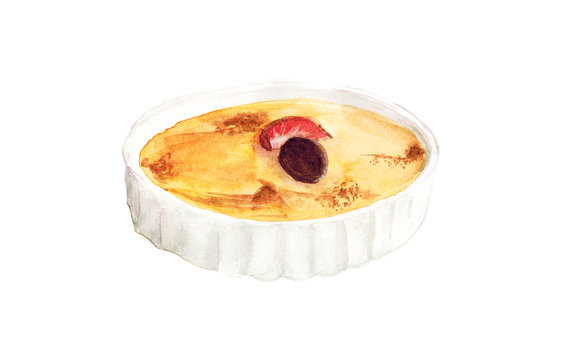
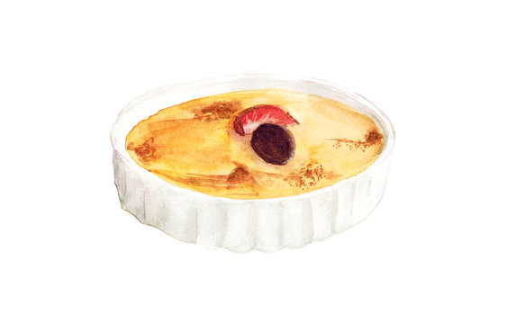

Five simple ingredients – cream, vanilla, salt, eggs and sugar – make for an exquisitely rich and elegant dessert. Most crème brûlée recipes require the use of a small propane torch to achieve the crackly sugar top, but this version offers a simpler (and safer) solution: your oven's broiler. One thing to note: Be sure to let the custard set for several hours in the refrigerator before brûléeing the top, otherwise you'll end up with soupy custard.
Featured in: THE MINIMALIST; How to Create the Crunch on Top of the Crème
1 Hour
5 Stars (4177 reviews)
Yield: 4 servings
2 cups heavy or light cream, or half-and-half
1 vanilla bean, split lengthwise, or 1 teaspoon vanilla extract
⅛ teaspoon salt
5 egg yolks
½ cup sugar, more for topping
Heat oven to 325 degrees. In a saucepan, combine cream, vanilla bean and salt and cook over low heat just until hot. Let sit for a few minutes, then discard vanilla bean. (If using vanilla extract, add it now.)
In a bowl, beat yolks and sugar together until light. Stir about a quarter of the cream into this mixture, then pour sugar-egg mixture into cream and stir. Pour into four 6-ounce ramekins and place ramekins in a baking dish; fill dish with boiling water halfway up the sides of the dishes. Bake for 30 to 40 minutes, or until centers are barely set. Cool completely. Refrigerate for several hours and up to a couple of days.
When ready to serve, top each custard with about a teaspoon of sugar in a thin layer. Place ramekins in a broiler 2 to 3 inches from heat source. Turn on broiler. Cook until sugar melts and browns or even blackens a bit, about 5 minutes. Serve within two hours.
  

New York Times Cooking: Vanilla Crème Brûlée: This was the main website/recipe that I followed, the instructions were clear and the readability of the website was solid. I really liked the comment feature that allowed users to give their inputs and tips on how to take the recipe to the next level.
Food Network: Crème Brûlée: Although I didn't use this website for its instructions, the Food Network had a very straight forward website in terms of instructions. There was a funny video about Cullinary Torches. I ended up choosing New York Times' recipe due to their more interactive comment section.
Simply Recipes: Crème Brûlée: This website was very user friendly and had more in-depth instructions for various parts of the recipe. It even had a video on how to make the recipe. However the recipe was very long and a bit too much in terms of wanting to make a quick dessert.
Tasty: Harissa Chicken With Leeks and Potatoes: Tasty's website in my opinion is one of the best recipe websites, their instructions are very clear and each recipe is broken into 3 columns set side by side, the first being ingredients, second being instructions, and the third being a video/photo of the food being made and finished. Unlike other recipe websites such as Simply Recipes, which has really narrow and long columns, Tasty keeps things simple and compact for users to quickly read and not have to scroll through.
Khan Academy: In my opinion, Khan Academy is one of the best learning tools online. Although subjects found on Khan Academy aren't related to cooking, Khan Academy's learning structure is very intuitive and insightful. It breaks each topic down into steps that makes it easier for the user to complete and learn overtime. The section and points system could be useful in making a culinary based website that helps people learn how to cook based on levels and various dishes for a type of cuisine.
Apple: Although Apple's website is very tech based, it presents Apple's products in a very satisfying way. As you scroll through pages about each and every product, you are met with smooth transitions of information about the product. Although this seems very difficult, Apple actually uses hundreds of images that appear as you scroll, giving you the illusion that you're going through a real-time rendering. These elements could be used to create a scrolling effect as one scrolls through a recipe website, maybe the dish is being made, cooked as you scroll down for more directions.
Duolingo: Although Duolingo is mainly for learning languages, a lot of its teaching elements can be extracted. Duolingo has a very "in your face" way of getting people to continue lessons. It would be fun to see these elements translated into a food recipe website, maybe learners get badges whenever they complete a certain cuisine type. Instead of the Duolingo owl it could be another animal that constantly notifies you to stay on track and learn.